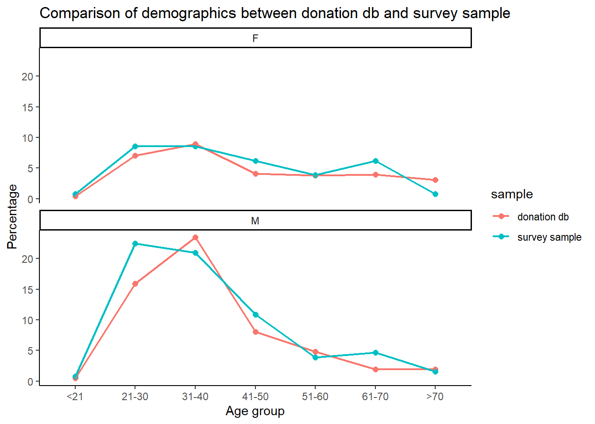
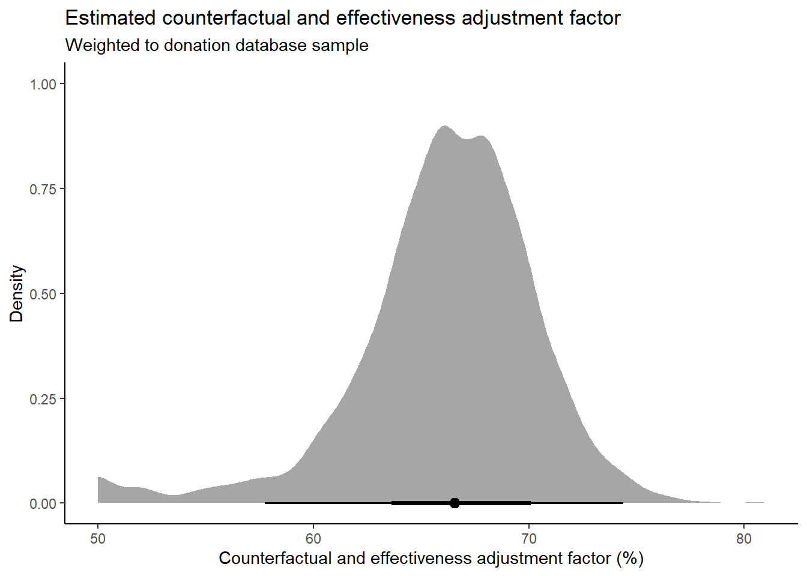
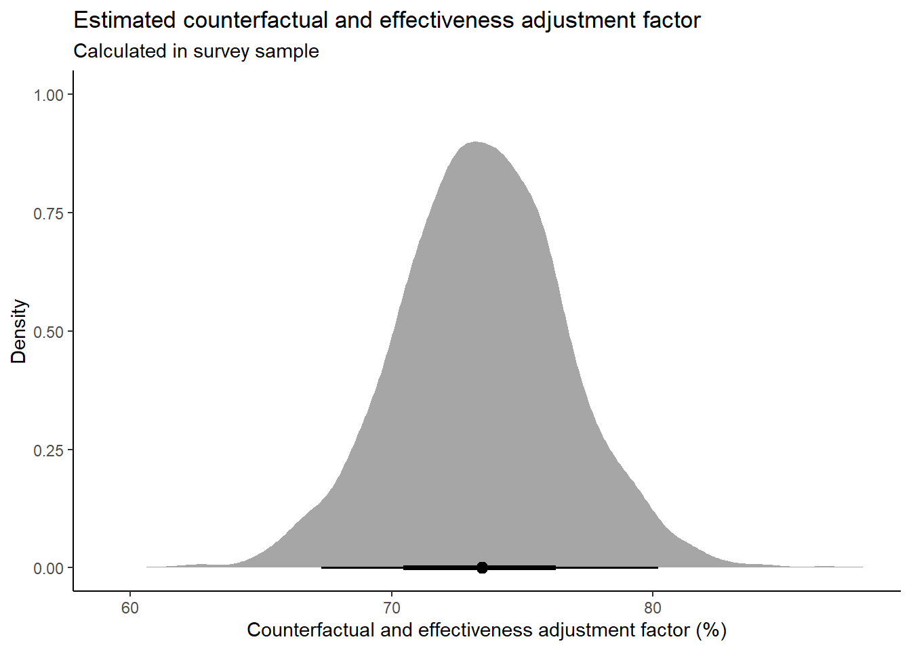
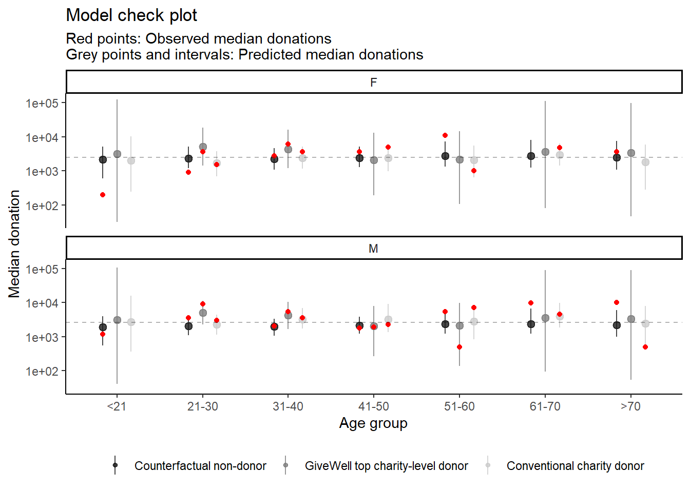

Giv Effektivt’s counterfactual and effectiveness adjustment factor
Author
Theiss Bendixen
Introduction
This semi-technical write-up aims at computing a combined counterfactual and effectiveness adjustment factor for donations to Giv Effektivt.
This factor informs a “counterfactual giving multiplier” estimate for the overall counterfactual impact of Giv Effektivt, see more here.
Essentially we ask: Of our total donations, how big a percentage did we influence, either by encouraging donors to donate or to donate more effectively?
The basic strategy is to use post-donation survey responses to the question: How would you have spent the donated amount if not on Giv Effektivt? and couple each response to a donation in our donation database based on time stamps.
Next, we assign (subjective!) weights (justified in the Google Sheets link above) to each of these responses that reflect their counterfactual/effectiveness-adjusted value and use those weights to re-calculate the percentage of donated funds that wouldn’t have been donated in the absence of Giv Effektivt or would’ve been donated less effectively.
Finally, we attempt to mitigate post-donation survey selection bias by re-weighing results to our full donation database sample, using a multilevel model with poststratification (MrP)-based approach. Modelling the data is necessary, since there are demographic combinations in the donation database that we do not observe in the survey sample, hence we need a model to try and predict for those groups.
The program has 7 main parts:
First, load packages and data
Join survey and donation datasets on time stamps
Calculate counterfactual and effectiveness adjustment factor in survey sample
Model and re-weigh results to full donation database sample
Model check: For comparison, model data from survey sample similarly to Step 4 but without weights (should roughly match result from Step 3)
Model check: Plot observed median donations for demographic strata against non-weighted predictions from multilevel model (posterior predictive check)
Counterfactual and effectiveness adjustment factor based on number of donors (to reproduce calculation in giving multiplier document)
Load packages and data
Show code
################################# 1) Load packages and data #################################library(dplyr)library(lubridate)library(brms)library(tidybayes)library(ggplot2)### Load post-donation survey samplesurvey <-read.csv("~/Desktop/GE/paste-5f89ce518f963ce8.txt") |># streamline timestamp to datetimemutate(survey_timestamp =ymd_hms(strptime(Timestamp, format ="%Y/%m/%d %I:%M:%S %p GMT+1")),response =`Hvordan.havde.du.brugt.pengene..hvis.ikke.de.var.doneret.til.Giv.Effektivt.`,survey_id =seq(1, nrow(read.csv("~/Desktop/GE/paste-5f89ce518f963ce8.txt"))))### Load donation databasedonations <-read.csv("~/Desktop/GE/paste-23e21d9f38b4b0d3.txt") |># streamline timestamp to datetime (GMT+1)mutate(donation_timestamp =ymd_hms(created_at, tz ="UTC") +3600)
Join datasets on time stamps
The basic approach here is that we try to find matches between survey responders and donations in our donation database within some time range. This time range is fairly arbitrary but a reasonable first pass could be to look for survey responses that happen anywhere from, say, 30 seconds to 900 seconds after a donation.
Show code
### Function to find matching surveys for each donationfind_matching_surveys <-function(donations, survey, min_seconds =30, max_seconds =900) {# Initialize an empty result dataframe result <-data.frame()# Loop through each donationfor (i in1:nrow(donations)) { donation <- donations[i, ]# Calculate time bounds min_time <- donation$donation_timestamp +as.difftime(min_seconds, units ="secs") max_time <- donation$donation_timestamp +as.difftime(max_seconds, units ="secs")# Find surveys that occurred between min_seconds and max_seconds after this donation matching_surveys <- survey %>%filter( survey_timestamp >= min_time, survey_timestamp <= max_time ) %>%select(survey_id, survey_timestamp, response)# If there are matching surveys, add themif (nrow(matching_surveys) >0) { joined <-cbind( donation, matching_surveys,time_diff_sec =as.numeric(difftime(matching_surveys$survey_timestamp, donation$donation_timestamp, units ="secs") ), row.names =NULL ) result <-rbind(result, joined) } }return(result)}### Perform the joinmerged <-find_matching_surveys(donations, survey)### Check missing matches, multiple matches and unique matchessurv_miss <-nrow(survey)-length(unique(merged$survey_id))mult_match <- merged %>%count(survey_id) %>%filter(n >1) %>%nrow()final_match <- merged %>%group_by(survey_id) %>%summarise(n =n()) %>%left_join(merged) %>%filter(n ==1)
This time range results in 177 donation matches, where minimum 1 match is found for each survey response. However, some of these survey responses – 29 to be precise – have multiple donation matches.
As we proceed, we select only those matches with a single linked donation, leaving us with 148 out of 195 survey responses in total (76%).
This captures 840k DKK of (prospective) donations, roughly 9.5% of the total donation database.
Counterfactual and effectiveness adjustment factor in survey sample
In this step, we assign (subjective!) weights (justified in the same Google Sheets link as above) to each of the survey responses that reflect their combined counterfactual and effectiveness-adjusted value and use those weights to re-calculate the percentage of donated funds that wouldn’t have been donated in the absence of Giv Effektivt or would’ve been donated less effectively.
Show code
######################################################################################## 3) Calculate counterfactual and effectiveness adjustment factor in survey sample ########################################################################################### For now, keep only those donations with one match. Then, add (subjective!) adjustment weights to each type of survey responsefin <- merged %>%group_by(survey_id) %>%summarise(n =n()) %>%left_join(merged) %>%filter(n ==1) %>%mutate(adjustment =case_when(# Non-GiveWell charities response %in%c("En almindeligt kendt velgørenhedsorganisation","En klimaorganisation med fradrag (Verdens skove, Naturfonden eller noget tredje). Evt egne investeringer i klimatiltag. ","Andre velgørende områder som fx dyrevelfærd, klima, osv.","Dansk vegetarisk forening. Mangler en god vegansk og fradrags berettiget organisation. ","Oxfam","Læger uden grænser ", "PULS projekt ulandshjælp til selvhjælp", "røde kors","Andre velgørende formål som fx dyrevelfærd, klima, osv.","Jeg havde brugt færre penge på velgørenhed fordi jeg ikke forstod de etiske perspektiver som GivEffektivt forklarede mig da de medvirkede i Supertanker","Mit hjerte banker for de uskyldige dyr, så de fleste donationer jeg har givet, har været til dyr. Jeg ville elske at mine penge til dyrene kunne blive brugt bedst muligt") ~10,# Counterfactual non-donors response %in%c("Eget forbrug eller opsparing","Fysisk gave","Købt et hus ;)","En eller anden ligegyldig gave") ~1,# GiveWell or similar response %in%c("En af de organisationer vi pt. anbefaler (uden fradrag): Against Malaria Foundation, New Incentives, Helen Keller International, GiveWell, Malaria Consortium","GiveWell eller Giving What We Can (uden fradrag)", "Blandede donationer til Against Malaria Foundation, MSF, kræftens bekæmpelse og lign.","Nok Against Malaria Foundation Germany 1 da de er på GiveWell listen og giver skattefradrag, så jeg kan give mere.") ~1.1))### Calculate total (KPI) donations and also calculate adjusted total, applying the counterfactual/effectiveness adjustmentresults <- fin %>%group_by(adjustment) %>%summarise(total_donated =sum(kpi_value)) %>%mutate(adjusted_total = (total_donated*(adjustment-1)/adjustment))### In-sample counterfactual and effectiveness adjustment factor, ### adding the counterfactual non-donors (Adjustment == 1) and calculate percentagesample_est <-with(results, sum(adjusted_total, total_donated[adjustment ==1])/sum(total_donated)) *100
We arrive at an estimate of 75.5%. That is, based on the survey data and subjective weights, we estimate that 75.5% of the funds we raise and regrant are uniquely attributable to Giv Effektivt. Not too shabby!
Counterfactual and effectiveness adjustment factor in database sample
The estimate in the previous step assumes that our survey sample is representative of our wider donor base. This is potentially a strong assumption, so we want to try as best as we can to correct for observed discrepancies – in particular, age and sex which are the available variables – between our survey sample and our wider donor base. We proceed in the following manner:
Fit a model on donated amount predicted by age, sex and survey response in our matched sample
Obtain proportions of age and sex in donor database
Use donor database proportions to reweigh model predicted donation amounts
Fit a model
Show code
### Next up, multilevel regression with poststratification (MrP):### 1) fit a multilevel model on donated amount predicted by (binned) age, sex and response category with time-matched sample### 2) get database proportions of age and sex### 3) use database proportions to reweigh predicted KPI value### 4) profit### log KPI value and set adjustment weights as a factor variabled <- fin %>%mutate(log_kpivalue =log(kpi_value),adjustment =as.factor(adjustment))### Binning age for multilevel model### e.g., <20, 20-30, 31-40, 41-50, 51-60, 61-70, >70## donations databasedonations$age_group <-cut(donations$age,breaks =c(0, 20, 30, 40, 50, 60, 70, Inf),labels =c("<21", "21-30", "31-40", "41-50", "51-60", "61-70", ">70"),right =FALSE)### survey datad$age_group <-cut(d$age,breaks =c(0, 20, 30, 40, 50, 60, 70, Inf),labels =c("<21", "21-30", "31-40", "41-50", "51-60", "61-70", ">70"),right =FALSE) %>%as.factor()### Fit multilevel log-linear model with random intercepts for gender and age to allow partial poolingmod <-brm(log_kpivalue ~ adjustment + (1+ adjustment | gender) + (1+ adjustment | age_group),data = d, iter =2000, seed =42, control =list(adapt_delta =0.9),cores =4)
Obtain proportions of age and sex in donor database
Show code
### Get database demographic proportionsdbdemo <- donations %>%# NB: Only unique person IDs to not count the same people more than oncedistinct(unique_person_id, .keep_all =TRUE) %>%# NB: discard IDs with NA in agefilter(!is.na(age_group)) %>%group_by(gender, age_group) %>%summarise(n =n(),prop = n/nrow(donations %>%# NB: Only unique person IDs to not count the same people more than oncedistinct(unique_person_id, .keep_all =TRUE)))### Get survey demographic proportions for comparison d_demo <- mod$data[c("age_group", "gender", "adjustment")] %>%group_by(gender, age_group) %>%summarise(n =n(),prop = n/nrow(mod$data[c("age_group", "gender", "adjustment")]))
We can check how our matched survey sample compare demographically with our donor database. The overlap is not too bad, except perhaps the survey has an overrepresentation of younger men compared to the donor database.
Show code
### Plot rbind(dbdemo %>%mutate(sample ="donation db"), d_demo %>%mutate(sample ="survey sample")) %>%ggplot(aes(x = age_group, y = prop*100, group = sample, color = sample)) +geom_point(size =2) +geom_line(linewidth =0.75) +facet_wrap(~gender, nrow =2) +labs(title ="Comparison of demographics between donation db and survey sample",y ="Percentage",x ="Age group") +theme_classic()

Use donor database proportions to reweigh model predicted donation amounts
Finally, we reweigh our model predicted donation amounts with the weights obtained from the demographic composition of the donor database. Let’s plot the result as a density to express the our uncertainty.
Show code
### Posterior predictions with proportions as weights on database sampleppdbkpi <-add_epred_draws(object = mod,newdata = tidyr::crossing(dbdemo, adjustment =unique(d$adjustment)),allow_new_levels =TRUE,re_formula =NULL) %>%# Exponentiate predictions and re-weigh with demopgraphic proportionsmutate(estimate =exp(.epred)*prop) %>%# Sum predictions for each adjustment levelgroup_by(adjustment, .draw) %>%summarise(total_donated =sum(estimate)) %>%# Apply subjective adjustment factorsmutate(adjusted_total = (total_donated*(as.numeric(adjustment)-1)/as.numeric(adjustment)))### Plot posterior poststratified counterfactual and effectiveness adjustment factorppdbkpi %>%group_by(.draw) %>%# Add the counterfactual non-donors (Adjustment == 1) and calculate percentagesummarise(y =sum(adjusted_total, total_donated[adjustment ==1])/sum(total_donated) *100) %>%# Plot!ggplot() +stat_halfeye(aes(x = y), point_interval ="median_hdci") +theme_classic() +labs(title ="Estimated counterfactual and effectiveness adjustment factor",subtitle ="Weighted to donation database sample",x ="Counterfactual and effectiveness adjustment factor (%)",y ="Density")

Show code
### Posterior median poststratified counterfactual and effectiveness adjustment factordb_est <- ppdbkpi %>%group_by(.draw) %>%summarise(y =sum(adjusted_total, total_donated[adjustment ==1])/sum(total_donated) *100) %>%median_hdci(y)
Result
The final result is 66.6% [57.7% ; 74.4%], which is similar albeit a little lower than the matched survey sample estimate of 75.5%.
The following sections include a few model checks.
Model check: Calculate counterfactual and effectiveness adjustment factor in survey sample (for comparison)
Here, we check what happens if we ignore the demographic weights to see if our model predictions fit reasonably with our empirical (i.e., not model-based) estimate in the matched survey sample.
Show code
### Posterior predictions on survey sampleppsurveykpi <-add_epred_draws(object = mod,newdata =distinct(mod$data[c("gender", "age_group", "adjustment")])) %>%# Exponentiate predictions *but no re-weighing*mutate(estimate =exp(.epred)) %>%# Sum predictions for each adjustment levelgroup_by(adjustment, .draw) %>%summarise(total_donated =sum(estimate)) %>%# Apply subjective adjustment factorsmutate(adjusted_total = (total_donated*(as.numeric(adjustment)-1)/as.numeric(adjustment)))### Plot posterior in-sample counterfactual and effectiveness adjustment factorppsurveykpi %>%group_by(.draw) %>%# Add the counterfactual non-donors (Adjustment == 1) and calculate percentagesummarise(y =sum(adjusted_total, total_donated[adjustment ==1])/sum(total_donated) *100) %>%# Plot!ggplot() +stat_halfeye(aes(x = y), point_interval ="median_hdci") +theme_classic() +labs(title ="Estimated counterfactual and effectiveness adjustment factor",subtitle ="Calculated in survey sample",x ="Counterfactual and effectiveness adjustment factor (%)",y ="Density")

Show code
### Posterior median in-sample counterfactual and effectiveness adjustment factorsamplemod_est <- ppsurveykpi %>%group_by(.draw) %>%summarise(y =sum(adjusted_total, total_donated[adjustment ==1])/sum(total_donated) *100) %>%median_hdci(y)
The result is 73.4%. Since we leave out the demographic weights and hence retain the demopgraphic composition of the matched survey sample, this result should line up fairly closely to the sample estimate of 75.5% from above, which it does.
Model check: Plot observed median donations for demographic strata against non-weighted model predictions
This model check plots observed (median) donations for demographic strata against non-weighted model predictions.
The red dots are observed median donations, while the grey points and intervals are predicted median donations. The dashed line represents the median donation for each sex.
How to read this plot? Ideally, the model is able to retrodict fairly accurately the observed donations, although with more shrinkage (and uncertainty) for sparsely populated or unobserved demographic combinations.
Show code
### Posterior predictions without weights for all combinations of gender, age_groups and adjustment ("posterior predictive check")ppsurveykpi <-add_epred_draws(object = mod,newdata = tidyr::crossing(d_demo, adjustment =unique(d$adjustment))) %>%mutate(.epred =exp(.epred)) %>%group_by(adjustment, age_group, gender) %>%summarise(median_qi(.epred)) %>%rename(median_donation = y,.lower = ymin,.upper = ymax)### Median donation amounts for all *observed* combinations of gender, age_groups and adjustment obssurveykpi <- mod$data %>%mutate(kpi_value =exp(log_kpivalue)) %>%group_by(adjustment, age_group, gender) %>%summarise(median_donation =median(kpi_value))### In order for the geom_points to overlap in the below plot, non-observed combinations of### gender, age_group and adjustment need to be filled in (and set to NA -- will throw an ignorable warning in ggplot)obssurveykpi <-expand.grid(age_group =unique(ppsurveykpi$age_group),adjustment =unique(ppsurveykpi$adjustment),gender =unique(ppsurveykpi$gender)) %>%merge(obssurveykpi,by =c("age_group", "adjustment", "gender"),all.x =TRUE)### Marginal predictions for each gender to better visualize shrinkagehline <-add_epred_draws(object = mod,newdata = tidyr::crossing(d %>%select(!gender), gender =unique(mod$data$gender))) %>%mutate(.epred =exp(.epred)) %>%group_by(gender) %>%summarise(y =median(.epred))### Model check plot### Red: Observed median donations### Grey points and intervals: Predicted median donations### Dashed line: Marginal median donations for each gender### Ideally, the model is able to retrodict fairly accurately the observed donations, ### although with more shrinkage (and uncertainty) for sparsely populated or unobserved demographic combinationsdodge_width <-0.5ggplot(ppsurveykpi, aes(x = age_group, y = median_donation)) +geom_pointinterval(aes(ymin = .lower, ymax = .upper, color = adjustment, group = adjustment), position =position_dodge(width = dodge_width), linewidth =0.2, alpha = .8) +facet_wrap(~gender, nrow =2) +scale_color_manual(values =c("grey10", "grey50", "grey80"),labels =c("Counterfactual non-donor","GiveWell top charity-level donor","Conventional charity donor")) +geom_point(data = obssurveykpi,aes(x = age_group, y = median_donation, color = adjustment, group = adjustment), position =position_dodge(width = dodge_width),color ="red") +geom_hline(data = hline, aes(yintercept = y), linetype ="dashed", alpha =0.3) +theme_classic() +theme(legend.position ="bottom",legend.title =element_blank()) +labs(title ="Model check plot",subtitle ="Red points: Observed median donations\nGrey points and intervals: Predicted median donations",y ="Median donation",x ="Age group") +scale_y_log10()

Eye-balling results, shrinkage is quite heavy across the board, making demographic groups more similar, but otherwise there appears to be reasonable overlap with observed median donation amounts.
Counterfactual and effectiveness adjustment factor based on number of donors
This final section is a coded up calculation of the counterfactual and effectiveness adjustment factor currently used in the giving multiplier tool (here), which is based on the number of donors instead of donation amounts.
Show code
### Define counterfactual/effectiveness adjustment (as in Step 3 above)survey_adjust <- survey %>%mutate(adjustment =case_when(# Non-GiveWell charities response %in%c("En almindeligt kendt velgørenhedsorganisation","En klimaorganisation med fradrag (Verdens skove, Naturfonden eller noget tredje). Evt egne investeringer i klimatiltag. ","Andre velgørende områder som fx dyrevelfærd, klima, osv.","Dansk vegetarisk forening. Mangler en god vegansk og fradrags berettiget organisation. ","Oxfam","Læger uden grænser ", "PULS projekt ulandshjælp til selvhjælp", "røde kors","Andre velgørende formål som fx dyrevelfærd, klima, osv.","Jeg havde brugt færre penge på velgørenhed fordi jeg ikke forstod de etiske perspektiver som GivEffektivt forklarede mig da de medvirkede i Supertanker","Mit hjerte banker for de uskyldige dyr, så de fleste donationer jeg har givet, har været til dyr. Jeg ville elske at mine penge til dyrene kunne blive brugt bedst muligt") ~10,# Counterfactual non-donors response %in%c("Eget forbrug eller opsparing","Fysisk gave","Købt et hus ;)","En eller anden ligegyldig gave","Dd") ~1,# GiveWell or similar response %in%c("En af de organisationer vi pt. anbefaler (uden fradrag): Against Malaria Foundation, New Incentives, Helen Keller International, GiveWell, Malaria Consortium","GiveWell eller Giving What We Can (uden fradrag)", "Blandede donationer til Against Malaria Foundation, MSF, kræftens bekæmpelse og lign.","Nok Against Malaria Foundation Germany 1 da de er på GiveWell listen og giver skattefradrag, så jeg kan give mere.") ~1.1))### There should be no NAs (all type of responses should be accounted for)# sum(is.na(survey_adjust$adjustment))### Calculate total donors and also calculate adjusted number of donors, applying the counterfactual/effectiveness adjustmentresults2 <- survey_adjust %>%group_by(adjustment) %>%summarise(total_donors =n()) %>%mutate(adjusted_donors = (total_donors*(adjustment-1)/adjustment))### In-sample counterfactual and effectiveness adjustment factor, ### adding the counterfactual non-donors (Adjustment == 1) and calculate percentagedonor_est <-with(results2, sum(adjusted_donors, total_donors[adjustment ==1])/sum(total_donors)) *100
The result is 80.1% which is very close but not identical to the number reported in the current version of the giving multiplier tool because we include newer survey data here.